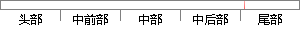

5和CART（Classification and Regression Tree）。
片段位置图

相似结果|
相似片段 1：acy(85．965 )of CART (Classification And Regression Tree)．Meanwhile，theKappa efficient was 0．849
相似片段 2： Model (GMM) and Classification and Regression Tree (CART) are involved. Experimental re-sults show
相似片段 3：: classification and regression tree; neural network; promotional merchandise1 引言分类和回归树(CART
相似片段 4：的数据中建立树状图用于分类与预测，常用的决策树方法有分类回归树（Classification and Regression Tree，CART）、卡方自动交互检验法（Chi-square
相似片段 5： treeAbstract：The Classification and Regression Tree node (Classification And Regression Tree,CART
相似片段 6：(SLR), generalized additive mixed model (GAMM), classification and regression tree (CART), and random
相似片段 7： Classification and Regression Tree (CART) algorithmwas used to generate the knowledge rules.
相似片段 8：（classification and regression tree，CART）和基于转换的错误驱动的学习（transformation-based error-driven learning，TBL
相似片段 9：（classification and regression trees，CART）的发展历史、结构、组成和特点。CART 包括分类树和回归树两部分，分类树的结果变量是分类变量，回归树的结果变量是连续变量
相似片段 10： used the decision tree CART classification algorithm model of the datamining classification method
|
※ 片段修改建议 ※
近似词参考：